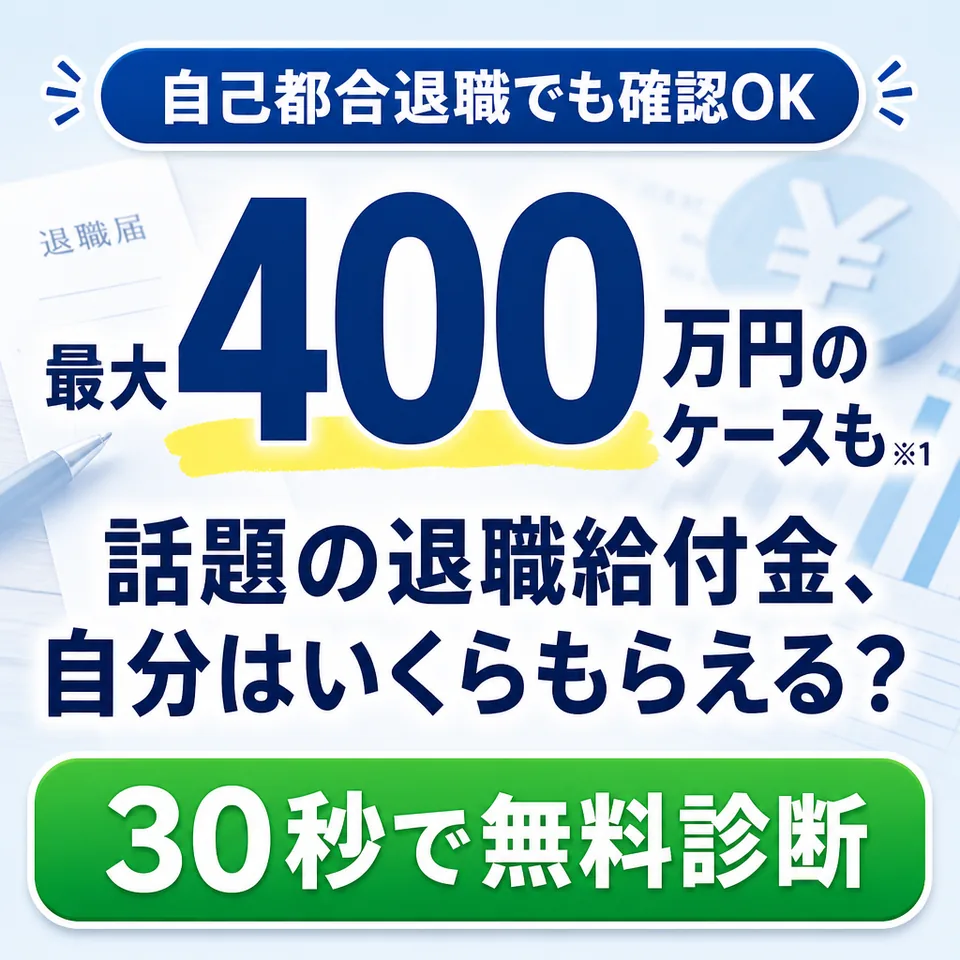
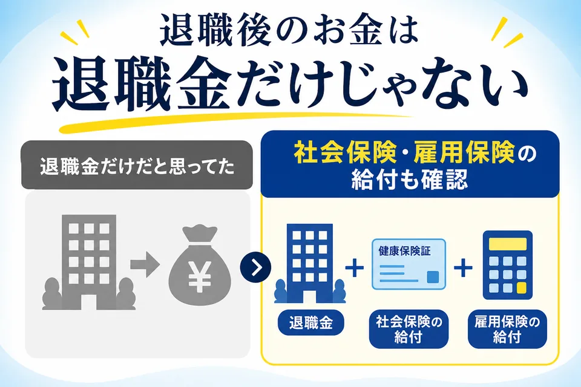
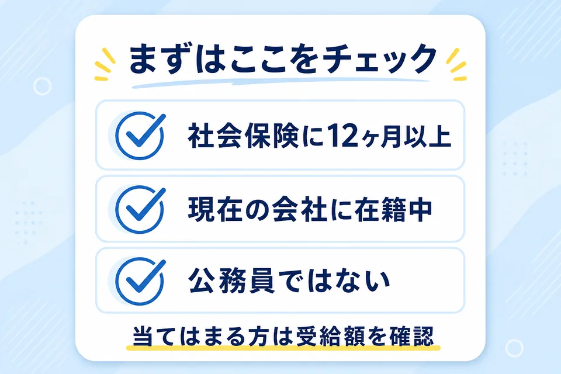
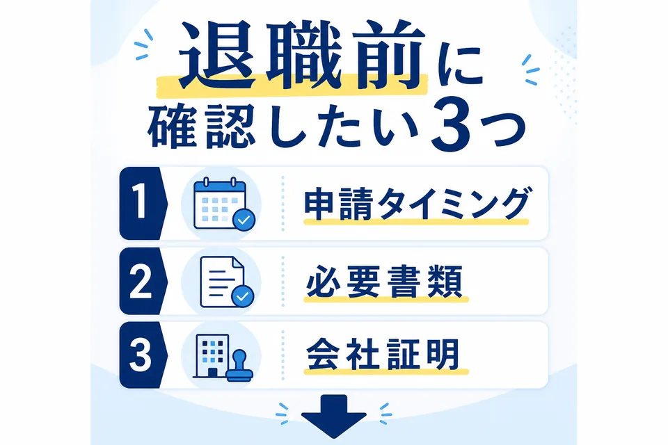

※1 月給30万円で失業手当＋傷病手当サポートご契約のお客様の平均額。
※「退職給付金」とは、雇用保険の失業手当、健康保険の傷病手当金、再就職支援手当などの総称です。
まず1問だけ
退職給付金の存在を
知っていましたか？
知っている方は、このまま自分の目安を確認できます。
辞めたいのに、
お金が怖くて動けない
朝、会社に行く準備をしているだけで胸が重い。
「もう辞めたい」と思っているのに、次に浮かぶのはいつも家賃・食費・次の仕事のこと。
でも、退職後の生活を支えるお金を受け取れる可能性があるなら、今の我慢を続けるかどうか、少し見え方が変わるかもしれません。

退職後のお金は
「退職金」だけではありません
多くの人が、退職後にもらえるお金と聞くと、会社から出る退職金を思い浮かべます。
でも確認したいのは、それだけではありません。
健康保険や雇用保険には、退職後の生活を支えるための給付制度があります。
自分の条件でどのくらい見込めるのかを見ることです。

まず、ここに
当てはまるか確認
- 社会保険に12ヶ月以上加入している
- 現在の会社に在籍中
- 公務員ではない
- 障害者手帳を持っていない
ひとつでも気になるなら、先に自分の条件で見ておく方が早いです。
※健康保険・雇用保険に1年以上加入している方は、給付を受け取れる可能性があります。受給可否は個別審査により異なります。
最大400万円のケースも。
では、自分はいくら？
ここで気になるのは、「そんなにもらえる人がいるなら、自分はどうなの？」ということだと思います。
同じ「会社を辞めたい」という悩みでも、月給、加入期間、退職前の状況によって確認すべき制度や準備が変わります。
だからまずは、平均や最大額ではなく、今の自分の条件でどのくらい見込めるのかをチェックしてみてください。
※1 月給30万円で失業手当＋傷病手当サポートご契約のお客様の平均額。
※受給額・受給期間は加入期間・退職理由・所得水準・地域等により個人差があり、すべての方に受給が保証されるわけではありません。
実際に、こんな金額に
なった方もいます
会社を辞めたい理由も、収入も、保険の加入状況も人によって違います。
だからこそ、「自分だったらどのくらいになるのか」を先に見ておく価値があります。
※過去にご相談いただいた一例であり、個人の感想です。受給金額・期間を保証するものではありません。人物画像はイメージです。
あなたはいくら
受け取れる可能性がある？
ここで、かんたんな診断シミュレーションを用意しました。
入力は選ぶだけ。まずは相談するかどうかを決める前に、自分の目安だけ見てください。
年齢を教えてください
雇用形態を教えてください
加入している保険を教えてください
月間の給与額を教えてください
退職予定はいつ頃ですか？
最近の状態に近いものはありますか？
LINEで無料確認すると、自分の場合に必要な準備を確認できます。
無料・匿名・30秒 LINEで目安を確認 ›※本診断は一般的な目安です。正確な金額や受給可否は、加入状況・退職理由・医師の診断書などによって異なります。

退職前に確認したい理由
退職給付金は、「辞めたあとに調べればいい」で済まないことがあります。
なぜなら、申請タイミング、必要書類、会社証明など、退職前に確認したいことが出てくる場合があるからです。
※傷病手当金の申請には事業主（会社）の証明が必要となります。手続きの詳細はLINE相談時に個別にご案内いたします。
退職前に受給額をチェック LINEで今すぐ無料診断 ›自分で調べるのが
難しい理由
退職後のお金について調べると、失業手当、傷病手当金、再就職手当、会社の証明、診断書、退職理由など、似たような言葉が一気に出てきます。
ネットで調べても、「結局、自分の場合はどうなの？」で止まってしまいやすいところです。
ひとりで制度を読み解く前に、まずは自分の条件を整理する。
そのための入口が、今回の無料診断です。
LINE診断後の流れ
※本ページに記載の受給額・受給期間等の数値は、2024年1月〜6月における当社サポート契約者の集計データに基づく実績例であり、すべての方に同等の結果を保証するものではありません。
過去にご相談いただいた方の声
収入がなくなるのが不安で辞められず、退職給付金を受け取りながら会社を辞める選択肢を知りました。
今は受給金額で生活を支えながら、システムエンジニアになるために勉強しています。
生活を考えると無理して働く必要があると思っていた時に、退職後の支援金制度を知りました。
※過去にご相談いただいた一例です。個人の感想であり、受給額を保証するものではありません。人物画像はイメージです。
よくある質問
まだ退職するか決めていません。それでも診断できますか？
できます。退職前に確認しておくことで、必要書類や申請タイミングを先に把握できます。
会社に知られますか？
まずはLINE診断と無料面談で状況を確認します。必要な手続きや会社証明については、個別の状況に合わせて案内します。
対象外だったらどうなりますか？
対象可能性が低い場合でも、今後確認すべきことを整理できます。まずは無料診断で目安を確認してください。
診断では何を聞かれますか？
年齢、雇用形態、保険加入状況、月給、退職予定時期、最近の状態などです。
辞める前に、まずは
受け取れる可能性だけ確認
退職するかどうかを、今ここで決める必要はありません。
でも、退職後にもらえる可能性があるお金を知らないまま、限界の仕事を続ける必要もありません。
まずは30秒。 自分はいくら受け取れる可能性があるのか、そこだけ先に見ておいてください。
無料・匿名・退職前でも確認OK LINEで無料診断する ›